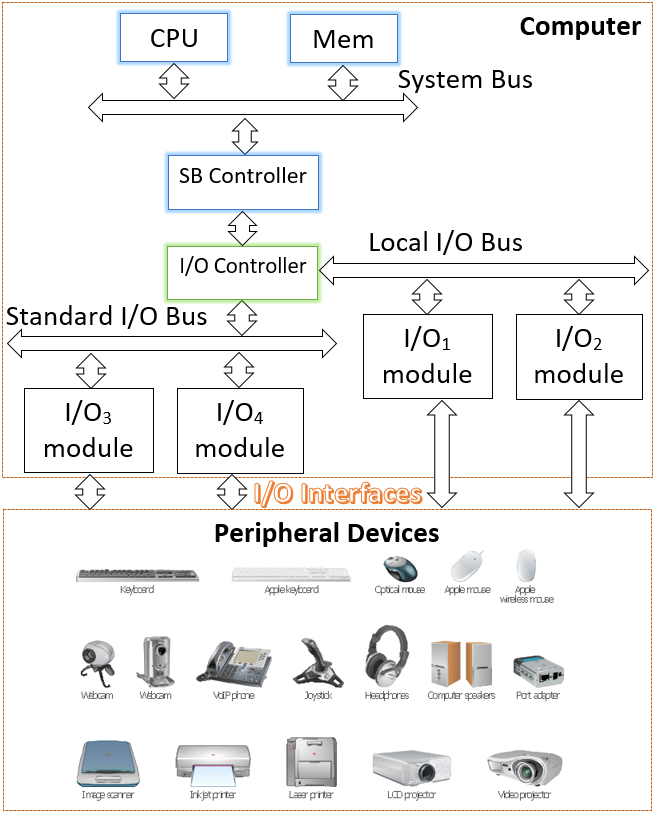
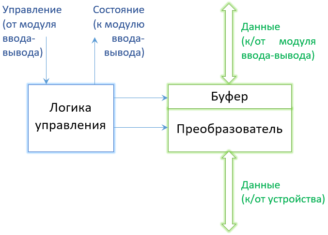
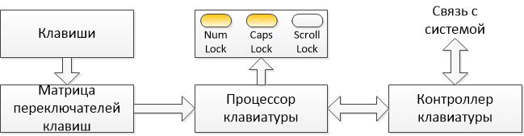
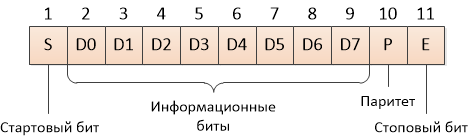

5.1 Цель работы
5.4 Подключение внешних устройств
5.4.1. Модуль ввода-вывода
5.4.2. Внешнее устройство
5.4.3. Принципы информационного обмена с внешним устройством
5.5 Структурно-функциональная организация клавиатуры
5.6 Контрольные вопросы и задания
Изучение принципов подключения внешних устройств к компьютеру и принципов организации информационного обмена на примере клавиатуры.
При изучении информационной части работы следует изучить принципы подключения модуля ввода-вывода к системной шине, обобщенную структуру периферийного устройства, принципы представления символов в коде ASCII, структурную схему клавиатуры и формат блока данных клавиатуры.
Во второй части необходимо выполнить моделирование работы клавиатуры и сформировать три таблицы:
Цитрусов Евгений Петрович, гр. КСМ-16-5
Отчет по работе должен содержать: цель работы, схему подключения модуля ввода-вывода к системной шине и ее описание, обобщенную структурную схему внешнего устройства и описание ее компонентов, структурную схему клавиатуры и описание ее работы, таблицы (в соответствии с разделом 5.2) и выводы по работе.
В дополнение к ЦПУ и набору модулей памяти, третьим ключевым компонентом компьютерной системы является набор модулей ввода-вывода. Каждый модуль подключается к системной шине или к контроллеру. Модуль ввода-вывода не только выполняет механическое подключение устройства к системной шине, но и содержит некоторый "интеллект", т.е. логику связи между периферийным устройством и шиной.
Любое периферийное устройство соединяется с системной шиной лишь опосредованно. Это обусловлено рядом причин:
Таким образом, возникает необходимость использовать модуль ввода-вывода, который выполняет две главные функции (рисунок 5.1): обеспечивает, с одной стороны, интерфейс с ЦПУ и памятью посредством системной шины, а с другой - обеспечивает интерфейс с одним или большим количеством периферийных устройств по каналами связи.

Рисунок 5.1 - Подключение модуля ввода-вывода
Внешнее устройство, подключенное к модулю ввода-вывода, называется периферийным устройством. В общем случае, внешние устройства могут быть классифицированы следующим образом:
Обощенная структурная схема внешнего устройства показана на рисунке 5.2.
Интерфейс с модулем ввода-вывода представлен в виде сигналов управления, состояния данных.
Данные представлят собой наборы битов, посылаемые в модуль ввода-вывода или получаемые из него.
Сигналы управления определяют функцию, которую устройство должно выполнить. Это может быть посылка данных модулю ввода-вывода (ВВОД или ЧТЕНИЕ), прием данных из модуля ввода-вывода (ВЫВОД или ЗАПИСЬ), отчет о состоянии или некоторая специфическая функция управления устройством (например, позиционирование дисковой головки).
Сигналы состояния индицируют состояние устройства. Примеры сигналов состояния - ГОТОВ/НЕ ГОТОВ - показывают, является ли устройство готовым для передачи данных.

Рисунок 5.2 - Структурная схема внешнего устройства
Компонентами внешнего устройства являются:
Основным информационным модулем обмена является символ. Каждый символ представлен кодом, обычно имеющим длину 7 или 8 бит. Наиболее широко используется код ASCII (American Standard Code for Information Interchange - "Американский стандартный код для информационного обмена"). В коде ASCII могут быть представлены 128/256 различных символов. В табл. 5.1 приведены все значения 7-разрядного кода. В таблице, биты каждого символа помечены от b7, который является старшим битом, до b1, - самого младшего бита. Например, разрядное представление символа "K" - 1001011.
Символы разбиты на два типа: печатаемые и символы управления. Печатаемые символы - алфавитные, числовые и специальные символы, которые могут быть напечатаны на бумаге или отображаться на экране. Некоторые из управляющих символов предназначены для управления печатью или отображения символов (например, символ возврата каретки). Другие управляющие символы относятся к процедурам связи.
Tаблица 5.1 - Кодовая таблица ASCII
| b4 b3 b2 b1 | b7 b6 b5 | |||||||
|---|---|---|---|---|---|---|---|---|
| 000 = 0x0 | 001 = 0x1 | 010 = 0x2 | 011 = 0x3 | 100 = 0x4 | 101 = 0x5 | 110 = 0x6 | 111 = 0x7 | |
| 0000 = 0x0 | NUL | DLE | Space | 0 | @ | P | ` | p |
| 0001 = 0x1 | SOH | DC1 | ! | 1 | A | Q | a | q |
| 0010 = 0x2 | STX | DC2 | " | 2 | B | R | b | r |
| 0011 = 0x3 | ETX | DC3 | # | 3 | C | S | c | s |
| 0100 = 0x4 | EOT | DC4 | $ | 4 | D | T | d | t |
| 0101 = 0x5 | ENQ | NAK | % | 5 | E | U | e | u |
| 0110 = 0x6 | ACK | SYN | & | 6 | F | V | f | v |
| 0111 = 0x7 | BEL | ETB | ' | 7 | G | W | g | w |
| 1000 = 0x8 | BS | CAN | ( | 8 | H | X | h | x |
| 1001 = 0x9 | HT | EM | ) | 9 | I | Y | i | y |
| 1010 = 0xA | LF | SUB | * | : | J | Z | j | z |
| 1011 = 0xB | VT | ESC | + | : | K | [ | k | { |
| 1100 = 0xC | FF | FS | , | < | L | \ | l | | |
| 1101 = 0xD | CR | GS | - | = | M | ] | m | } |
| 1110 = 0xE | CO | RS | . | > | N | ^ | n | ~ |
| 1111 = 0xF | SI | US | / | ? | O | _ | o | DEL |
При работе в DOS используются ASCII-коды символов. Коды ASCII представлены однобайтными числами, каждый из которых соответствует некоторому символу на клавиатуре. Таким образом, с помощью ASCII-кодов возможно кодировать до 256 различных символов, включая буквы алфавита, знаки арифметических операций, знаки пунктуации и т.д.
В OS Windows для кодирования символов используется специальный юникод (Unicode). Unicode представляет символы двумя байтами. Это вызвано тем, что OS Windows может использовать различные национальные алфавиты, и поскольку невозможно представить другие специальные символы, количество которых может превышать 256, используемых кодом ASCII. Максимальное количество закодированных символов в этом случае равно 65536.
Tаблица 5.2 - Таблица кодов кириллицы
| Символ | UNICODE | UTF-8 | Windows | DOS | ||||
|---|---|---|---|---|---|---|---|---|
| CP-1251 | CP-866 | |||||||
| Шестн. | Десят. | Шестн. | Десят. | Шестн. | Десят. | Шестн. | Десят. | |
| А | 410 | 1040 | D090 | 53 392 | C0 | 192 | 80 | 128 |
| Б | 411 | 1041 | D091 | 53 393 | C1 | 193 | 81 | 129 |
| В | 412 | 1042 | D092 | 53 394 | C2 | 194 | 82 | 130 |
| Г | 413 | 1043 | D093 | 53 395 | C3 | 195 | 83 | 131 |
| Д | 414 | 1044 | D094 | 53 396 | C4 | 196 | 84 | 132 |
| Е | 415 | 1045 | D095 | 53 397 | C5 | 197 | 85 | 133 |
| Ж | 416 | 1046 | D096 | 53 398 | C6 | 198 | 86 | 134 |
| З | 417 | 1047 | D097 | 53 399 | C7 | 199 | 87 | 135 |
| И | 418 | 1048 | D098 | 53 400 | C8 | 200 | 88 | 136 |
| Й | 419 | 1049 | D099 | 53 401 | C9 | 201 | 89 | 137 |
| К | 41A | 1050 | D09A | 53 402 | CA | 202 | 8A | 138 |
| Л | 41B | 1051 | D09B | 53 403 | CB | 203 | 8B | 139 |
| М | 41C | 1052 | D09C | 53 404 | CC | 204 | 8C | 140 |
| Н | 41D | 1053 | D09D | 53 405 | CD | 205 | 8D | 141 |
| О | 41E | 1054 | D09E | 53 406 | CE | 206 | 8E | 142 |
| П | 41F | 1055 | D09F | 53 407 | CF | 207 | 8F | 143 |
| Р | 420 | 1056 | D0A0 | 53 408 | D0 | 208 | 90 | 144 |
| С | 421 | 1057 | D0A1 | 53 409 | D1 | 209 | 91 | 145 |
| Т | 422 | 1058 | D0A2 | 53 410 | D2 | 210 | 92 | 146 |
| У | 423 | 1059 | D0A3 | 53 411 | D3 | 211 | 93 | 147 |
| Ф | 424 | 1060 | D0A4 | 53 412 | D4 | 212 | 94 | 148 |
| Х | 425 | 1061 | D0A5 | 53 413 | D5 | 213 | 95 | 149 |
| Ц | 426 | 1062 | D0A6 | 53 414 | D6 | 214 | 96 | 150 |
| Ч | 427 | 1063 | D0A7 | 53 415 | D7 | 215 | 97 | 151 |
| Ш | 428 | 1064 | D0A8 | 53 416 | D8 | 216 | 98 | 152 |
| Щ | 429 | 1065 | D0A9 | 53 417 | D9 | 217 | 99 | 153 |
| Ъ | 42A | 1066 | D0AA | 53 418 | DA | 218 | 9A | 154 |
| Ы | 42B | 1067 | D0AB | 53 419 | DB | 219 | 9B | 155 |
| Ь | 42C | 1068 | D0AC | 53 420 | DC | 220 | 9C | 156 |
| Э | 42D | 1069 | D0AD | 53 421 | DD | 221 | 9D | 157 |
| Ю | 42E | 1070 | D0AE | 53 422 | DE | 222 | 9E | 158 |
| Я | 42F | 1071 | D0AF | 53 423 | DF | 223 | 9F | 159 |
| а | 430 | 1072 | D0B0 | 53 424 | E0 | 224 | A0 | 160 |
| б | 431 | 1073 | D0B1 | 53 425 | E1 | 225 | A1 | 161 |
| в | 432 | 1074 | D0B2 | 53 426 | E2 | 226 | A2 | 162 |
| г | 433 | 1075 | D0B3 | 53 427 | E3 | 227 | A3 | 163 |
| д | 434 | 1076 | D0B4 | 53 428 | E4 | 228 | A4 | 164 |
| е | 435 | 1077 | D0B5 | 53 429 | E5 | 229 | A5 | 165 |
| ж | 436 | 1078 | D0B6 | 53 430 | E6 | 230 | A6 | 166 |
| з | 437 | 1079 | D0B7 | 53 431 | E7 | 231 | A7 | 167 |
| и | 438 | 1080 | D0B8 | 53 432 | E8 | 232 | A8 | 168 |
| й | 439 | 1081 | D0B9 | 53 433 | E9 | 233 | A9 | 169 |
| к | 43A | 1082 | D0BA | 53 434 | EA | 234 | AA | 170 |
| л | 43B | 1083 | D0BB | 53 435 | EB | 235 | AB | 171 |
| м | 43C | 1084 | D0BC | 53 436 | EC | 236 | AC | 172 |
| н | 43D | 1085 | D0BD | 53 437 | ED | 237 | AD | 173 |
| о | 43E | 1086 | D0BE | 53 438 | EE | 238 | AE | 174 |
| п | 43F | 1087 | D0BF | 53 439 | EF | 239 | AF | 175 |
| р | 440 | 1088 | D180 | 53 632 | F0 | 240 | E0 | 224 |
| с | 441 | 1089 | D181 | 53 633 | F1 | 241 | E1 | 225 |
| т | 442 | 1090 | D182 | 53 634 | F2 | 242 | E2 | 226 |
| у | 443 | 1091 | D183 | 53 635 | F3 | 243 | E3 | 227 |
| ф | 444 | 1092 | D184 | 53 636 | F4 | 244 | E4 | 228 |
| х | 445 | 1093 | D185 | 53 637 | F5 | 245 | E5 | 229 |
| ц | 446 | 1094 | D186 | 53 638 | F6 | 246 | E6 | 230 |
| ч | 447 | 1095 | D187 | 53 639 | F7 | 247 | E7 | 231 |
| ш | 448 | 1096 | D188 | 53 640 | F8 | 248 | E8 | 232 |
| щ | 449 | 1097 | D189 | 53 641 | F9 | 249 | E9 | 233 |
| ъ | 44A | 1098 | D18A | 53 642 | FA | 250 | EA | 234 |
| ы | 44B | 1099 | D18B | 53 643 | FB | 251 | EB | 235 |
| ь | 44C | 1100 | D18C | 53 644 | FC | 252 | EC | 236 |
| э | 44D | 1101 | D18D | 53 645 | FD | 253 | ED | 237 |
| ю | 44E | 1102 | D18E | 53 646 | FE | 254 | EE | 238 |
| я | 44F | 1103 | D18F | 53 647 | FF | 255 | EF | 239 |
| Ё | 401 | 1025 | D001 | 53 249 | A8 | 168 | F0 | 240 |
| ё | 451 | 1025 | D191 | 53 649 | B8 | 184 | F1 | 241 |
| Є | 404 | 1028 | D084 | 53 380 | AA | 170 | F2 | 242 |
| є | 454 | 1108 | D194 | 53 652 | BA | 186 | F3 | 243 |
| І | 406 | 1030 | D086 | 53 382 | B2 | 178 | - | - |
| і | 456 | 1110 | D196 | 53 654 | B3 | 179 | - | - |
| Ї | 407 | 1031 | D087 | 53 383 | AF | 175 | F4 | 244 |
| ї | 457 | 1111 | D197 | 53 655 | BF | 191 | F5 | 245 |
Символ (CP866) {Unicode} [UTF-8]
Клавиатура является наиболее распространенным и чаще всего основным средством взаимодействия пользователя с компьютером. С технической точки зрения, клавиатура представляет совокупность механических датчиков (матрицу переключателей клавиш), которые воспринимают давление на клавиши и преобразует механическую энергию в электрические сигналы. Наиболее распространены два типа клавиатур: с механическими и мембранными переключателями. В первом случае датчик представляет традиционный механизм с контактами из специального сплава. В клавиатурах известных фирм контакты переключателей имеют позолоченную поверхность, это существенно улучшает электрическую проводимость. Мембранный переключатель содержит три мембраны: активную - верхнюю, пассивную - нижнюю, разделенные третьей мембраной.
Как правило, внутри любой клавиатуры кроме датчиков клавиш (ключей) расположены электронные схемы дешифрации и микроконтроллер клавиатуры. Структурная схема клавиатуры показана на рисунке 5.3.

Рисунок 5.3 - Структурная схема клавиатуры
Основные компоненты клавиатуры:
Функционирование клавиатуры основано на постоянном просмотре матрицы переключателей процессором клавиатуры. Замкнутому состоянию любого из этих переключателей ставится в соответствие уникальный цифровой код - скан-код размером в один байт. Когда пользователь нажимает клавишу, процессор клавиатуры формирует ее скан-код, который передает на контроллер клавиатуры.
Информационный обмен между клавиатурой и системой выполняется 11-разрядными блоками (8 разрядов данных плюс сервисная информация). Рисунок 5.4 показывает пакет данных клавиатуры.

Рисунок 5.4 - Формат блока данных клавиатуры
Когда скан-код попадает в контроллер клавиатуры, формируется аппаратное прерывание IRQ 1. Процессор немедленно завершает операцию и выполняет процедуру, анализа скан-кода. Это прерывание обслуживается специальной подпрограммой, которая включена в структуру ROM BIOS. Та же самая подпрограмма может вызываться как программное прерывание INT 09h. Подпрограмма включает такие операции, как считывание скан-кода, преобразование скан-кода в код символа, сохранение символьного кода в буфере клавиатуры, отслеживание условий служебных клавиш (например Shift, Alt, Ctrl), обнаружение специальных горячих клавиш (например, Ctrl-Alt-Del) и т.д. Во всех остальных случаях скан-код преобразуется в символьный код. После этого символьный код размещается в буфере клавиатуры, откуда он передается в систему. Буфер способен хранить 15 кодов. При переполнении буфера система выдает звуковой сигнал.